BrainFlux
Interactive demonstrations for physics majors. Each one opens already doing something worth watching; change anything and see what happens. Every demo has a drawer of guided experiments, each of which sets itself up with one click. Demos marked beta are new and still being checked.
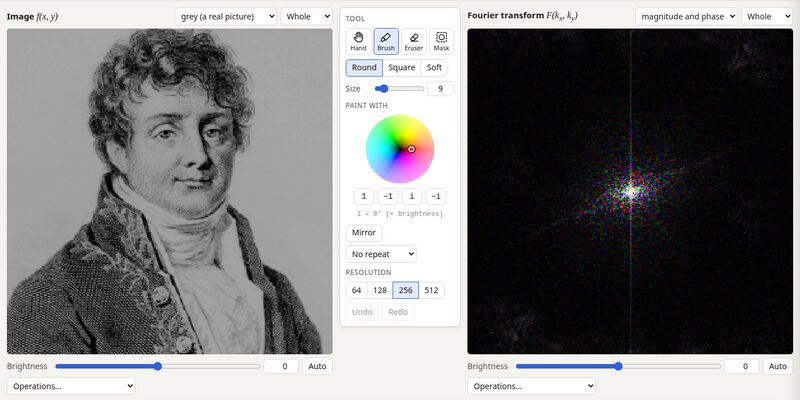
2D Fourier transform
Paint on a picture or on its Fourier transform and watch the other change as you paint. Filter the stripes off Fourier's jacket, swap phases between pictures, find the reciprocal lattice of a crystal.
Fourier analysis · optics · crystallography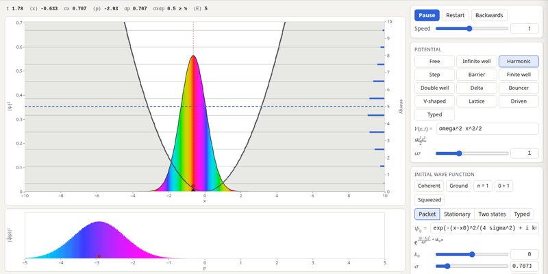
Schrödinger equation in 1D
Pick a potential and a wave function, or type your own, and watch it evolve: spreading, tunnelling, revivals, Bloch oscillations, measurement and collapse.
quantum mechanics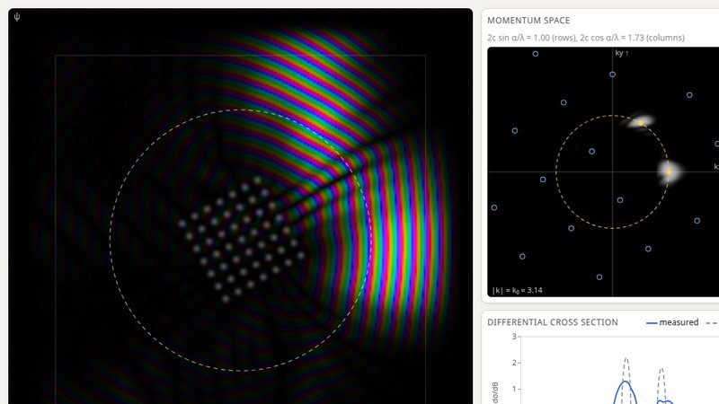
Scattering in 2D
Send wave packets at disks, wells, slits and crystals. The cross section is measured as they pass; compare it with the Born approximation, see the partial waves, watch the shadow carry out the optical theorem, and turn a crystal until it Bragg-reflects.
quantum mechanics · scattering theory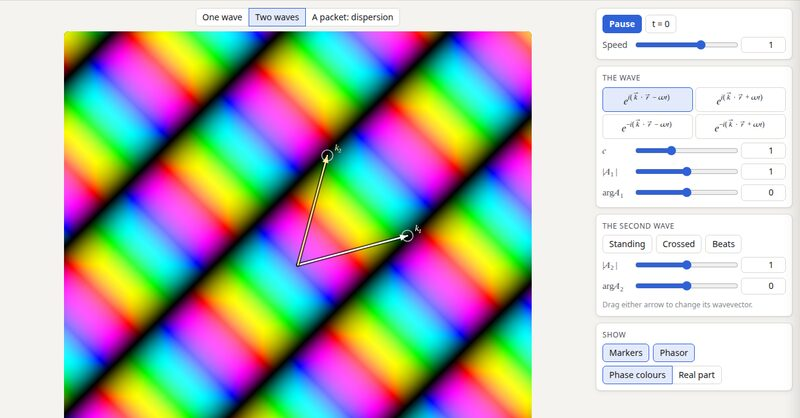
Plane waves
What $e^{i(\vec k\cdot\vec r-\omega t)}$ means: drag the wavevector, try the four sign conventions, superpose waves into standing waves, fringes and beats, and separate phase from group velocity in a packet.
waves · optics · quantum mechanics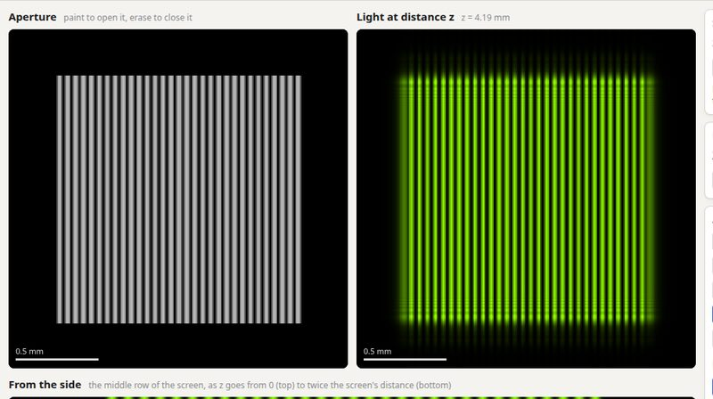
Diffraction
Paint an aperture and move the screen: from a sharp shadow to the Fourier transform. The spot of Arago, the Talbot carpet, zone plates, lenses, white light and speckle.
optics · Fourier analysis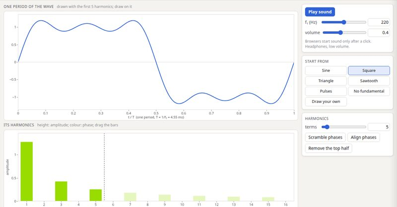
Fourier series you can hear
Draw one period of a wave, or shape its harmonics, and listen. Build a square wave term by term, scramble the phases (the ear doesn't mind), and hear the missing fundamental.
Fourier analysis · sound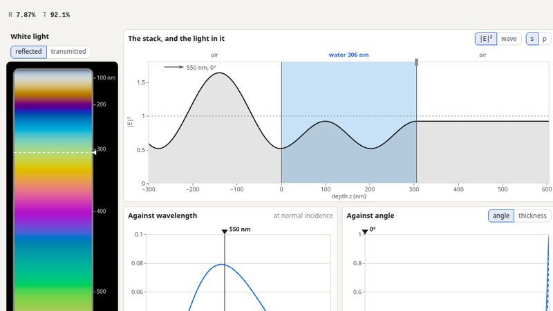
Interfaces and thin filmsbeta
Stack layers of glass, water, metal or any index you type, and see what they do to light: Brewster's angle, total internal reflection and tunnelling across a gap, soap-film colours as the eye sees them, coatings, Bragg mirrors, Fabry–Pérot filters and surface plasmons.
optics · electromagnetism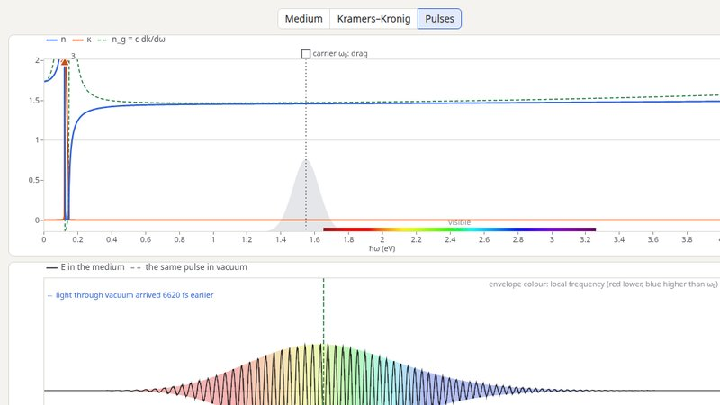
Dispersion and Kramers–Kronigbeta
Build $\varepsilon(\omega)$ from resonances you drag and watch the index, the absorption and the reflectance follow; draw the absorption and causality draws the index. Send pulses through: the group delay, a chirp, a peak that leaves early, and the precursors that arrive first.
optics · electromagnetism · causality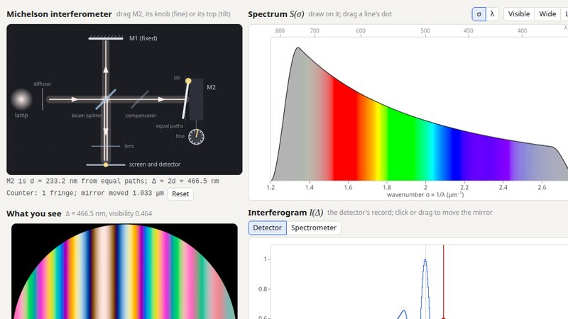
Interferometers and coherencebeta
Move a mirror and count fringes, hunt for the coloured fringes of white light, draw a spectrum and watch its interferogram (or the other way round), resolve the sodium doublet by Fourier-transform spectroscopy, and measure Betelgeuse as Michelson did in 1920.
optics · Fourier analysis · astronomy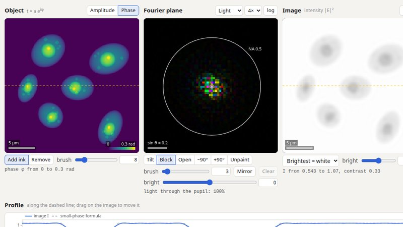
Imaging: Abbe and phase contrastbeta
A microscope as two Fourier transforms: paint the pupil and watch the image. Abbe's resolution limit, oblique light, dark field, schlieren, and Zernike's phase dot making transparent cells appear.
optics · Fourier analysis · microscopy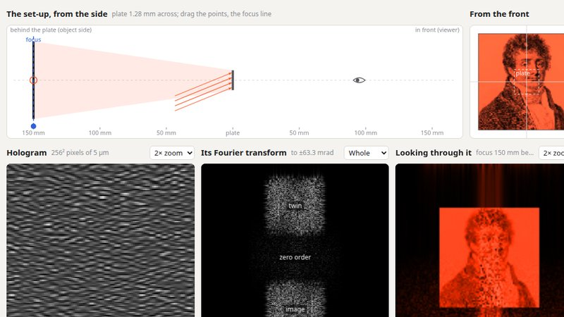
Holographybeta
Record how light from an object interferes with a reference beam, then light the recording and look through it: the object comes back, in depth, with its twin. Zone plates, Gabor's in-line hologram, the three islands of the off-axis transform, parallax through a window, and a hologram cut to pieces.
optics · Fourier analysis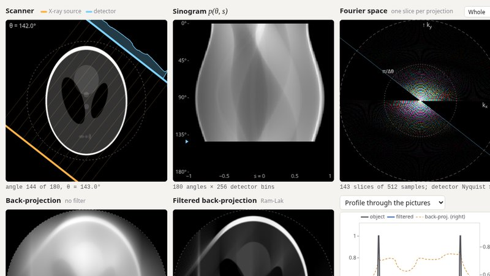
Tomographybeta
How a CT scanner sees inside: watch the sinogram fill as the scanner turns, back-projection blur and the ramp filter sharpen, and each projection fill a line of Fourier space. Streaks from too few angles, the missing wedge, photon noise, aliasing and metal.
imaging · Fourier analysis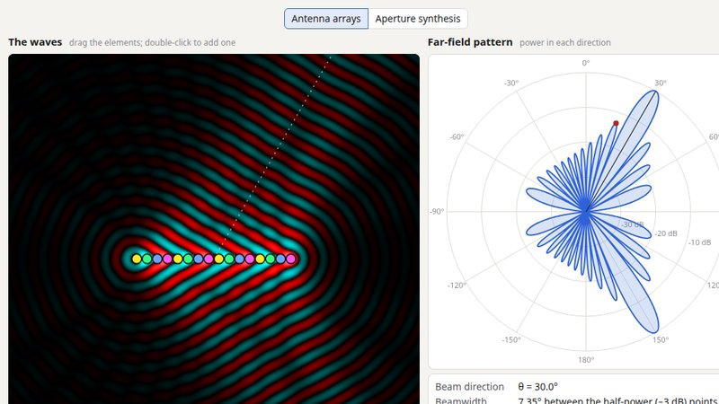
Antenna arrays and aperture synthesisbeta
Place antennas and set their phases: the far-field pattern is the Fourier transform of the layout. Steer a beam, meet grating lobes, focus waves to a spot; then put radio dishes on the turning Earth and image a black hole's ring.
electromagnetism · Fourier analysis · radio astronomy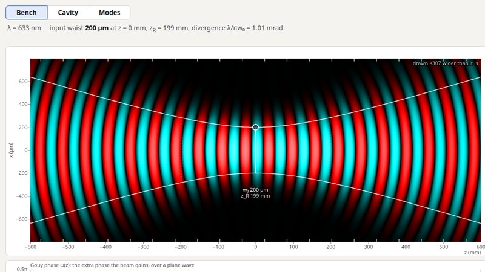
Gaussian beams and laser cavitiesbeta
Drag lenses, mirrors and glass along a laser beam and watch its waist, wavefronts and Gouy phase. Then trap it between two mirrors: the stability diagram, rays, the modes a cavity selects, and their frequencies.
optics · lasers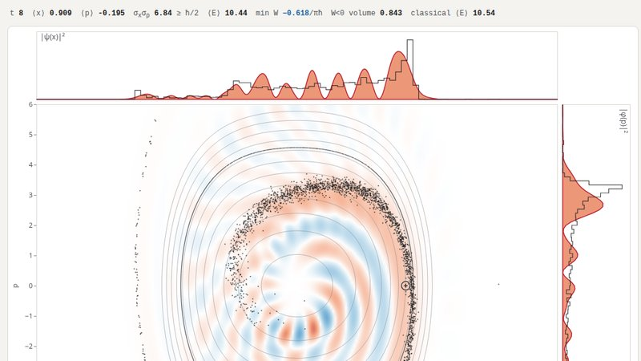
Quantum phase spacebeta
Watch the Wigner function of a wave function evolve beside a cloud of classical particles under the same Hamiltonian: where they agree, and where interference makes $W$ negative. Coherent, squeezed, number and cat states, tunnelling, the Husimi function and tomography.
quantum mechanics · phase space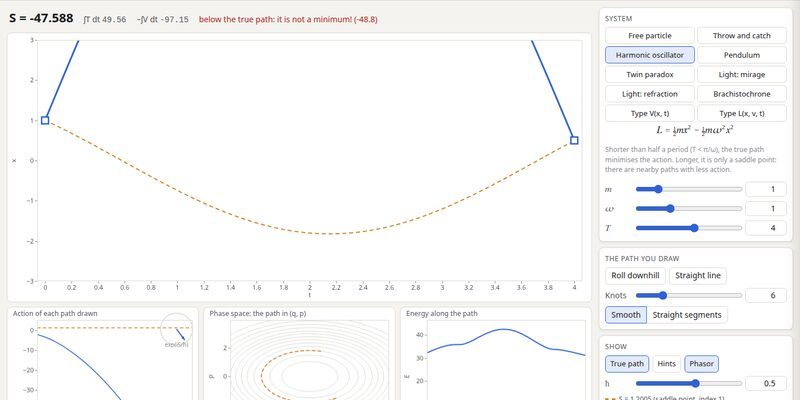
The principle of least actionbeta
Drag a path between two events and watch its action, recorded as you go. Find the true path; see when "least" is really a saddle; the twin paradox, Fermat's principle, the brachistochrone, and Feynman's phasors.
classical mechanics · Lagrangians